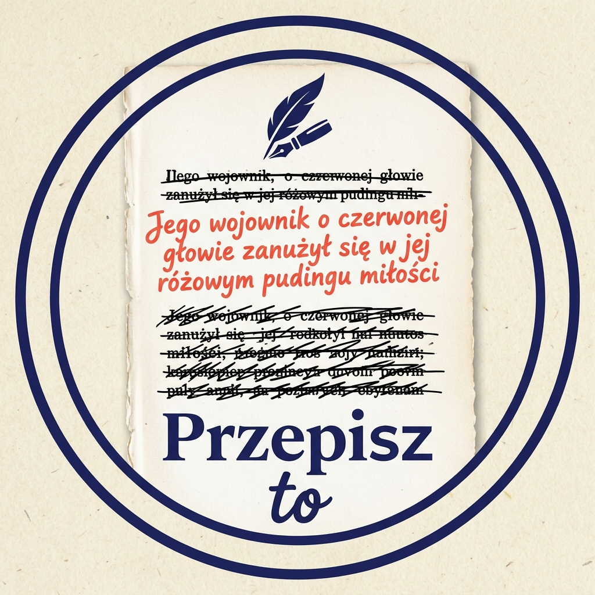

Przepisz to
Klasyka literatury przepisana w stylu współczesnych autorów. Ta sama historia, inny styl.
- „Lalka” — Bolesław Prus Pamiętnik starego subiekta à la Sapkowski, marzenia panny Izabeli à la Lipińska i Medytacje Wokulskiego à la Żulczyk.
Oryginały w domenie publicznej: Wolne Lektury.